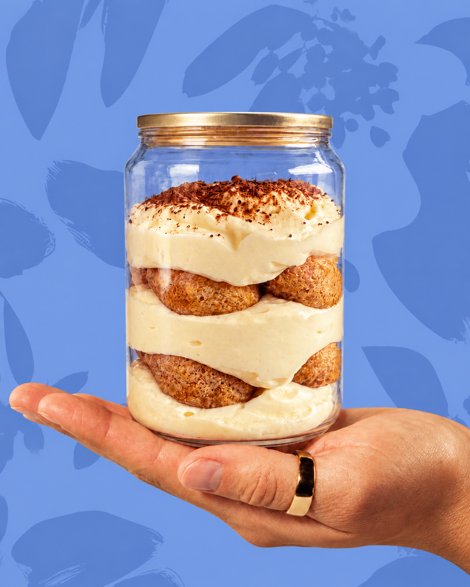
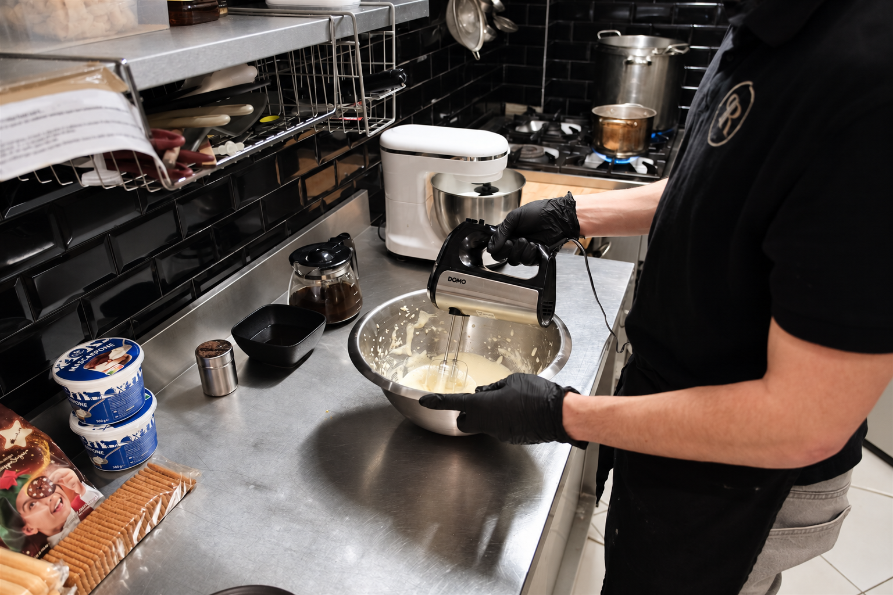
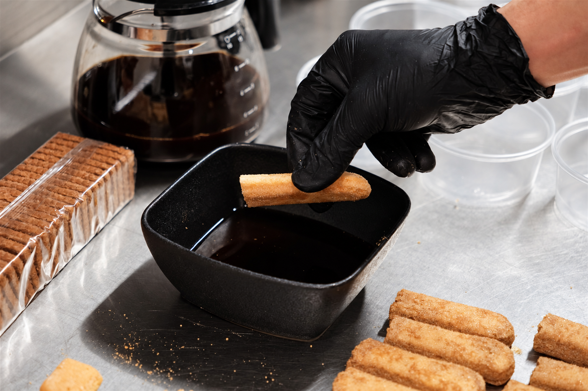
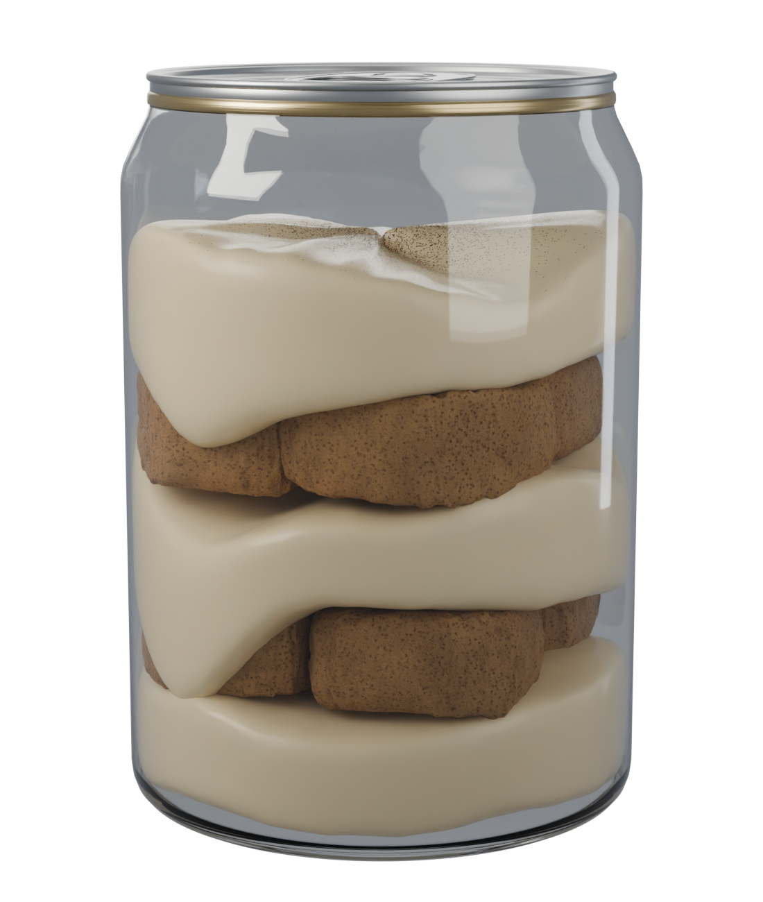
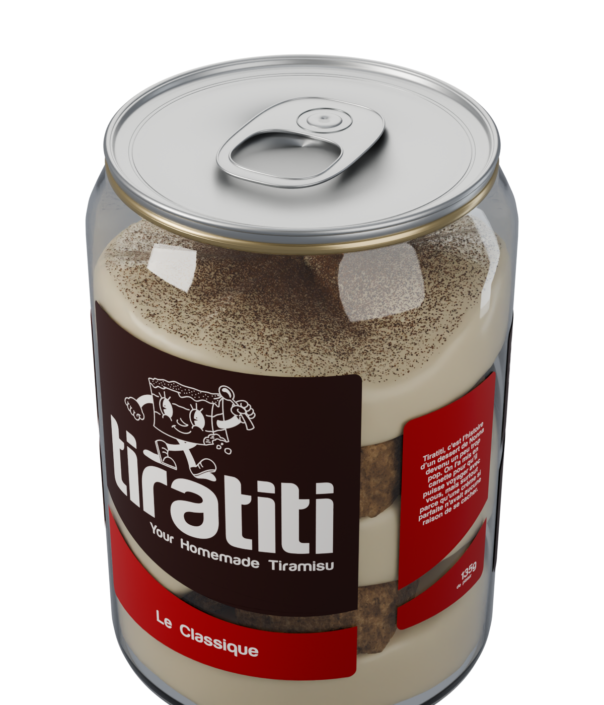
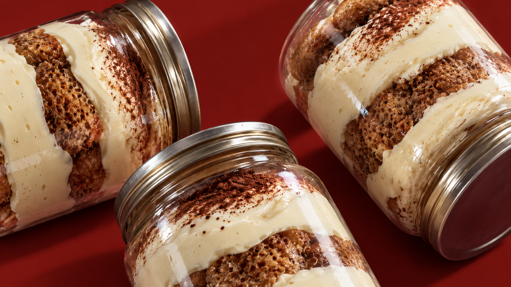

OUVRE.
Le couvercle se retire entièrement. Place à ta cuillère.

TIRAMISU ARTISANAL · PROVINCE DE LIÈGE
Préparé à la main. Servi en canette.
Dans le Classique,
chaque couche compte.
Légère, aérée, onctueuse.
Imbibés de café, fondants à la cuillère.
Présent, tout en douceur.
Le voile final.

C’était celui que je préparais avec ma Nona, depuis tout petit. Un goût que je cherchais souvent ailleurs, sans vraiment le retrouver.
Alors j’ai décidé de partager le nôtre.
Aujourd’hui, je prépare mes tiramisus à la main, en province de Liège. Et cette fois, ils ont une étiquette.
Timoty



La canette, mode d’emploi.
Le couvercle se retire entièrement. Place à ta cuillère.
Va chercher la crème et les biscuits dans la même bouchée.

Pour le partage, on te laisse gérer.


Trois goûts. Une même crème au mascarpone.
Boudoirs imbibés de café, crème au mascarpone et voile de cacao. Celui avec lequel tout a commencé.
Le goût du spéculos rencontre l’onctuosité du mascarpone. Notre clin d’œil à la Belgique.
Des biscuits Pane di Stelle au cacao et notre crème au mascarpone. Pour les faibles face au chocolat.
Tiratiti · Province de Liège
Préparés à la main en province de Liège, nos tiramisus ont envie de vous rencontrer.
Retrouve la carte et les nouvelles adresses sur notre page dédiée.
Découvrir nos adresses ↗
Dans votre établissement
Envie de faire découvrir Tiratiti à vos clients ? Parlez-nous de votre établissement, de votre ville et des goûts qui vous intéressent.
Parlons de votre établissement ↗Autour d’une même table
Un événement en tête ? Dites-nous la date, le lieu et le nombre de personnes. Nous pourrons parler des goûts et des possibilités ensemble.
Parlons de votre événement ↗